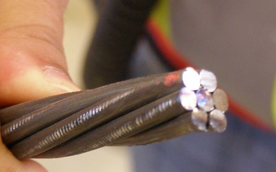
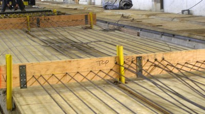
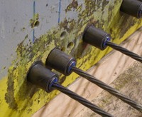
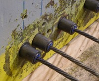

Concreto pretensado fundido in situ [CIPPS]
Como el concreto fundido in situ, pero donde los miembros principales del sistema resistente a cargas laterales son post - tensadas con cables de acero o varillas.

Un cable típico preesforzado (S. Brzev)

Cables de pretensado instalados antes del vaciado del concreto (Canada, S. Brzev)
 

El anclaje de un elemento de hormigón pretensado , Canadá (S. Brzev)